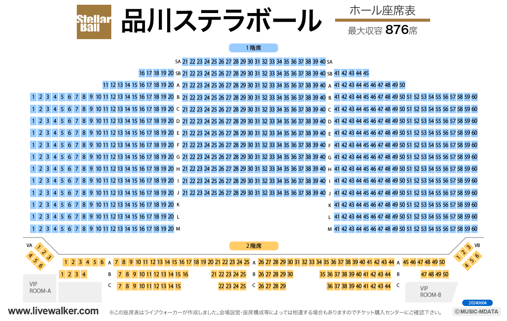

グループ名:Star Light PolaRis(すたぽら)
グループ始動日 2021年4月2日
すたぽらしょっぷ
すたぽらHP(公式)
グループのオリ曲(おすすめ)↓
歌ってみたおすすめ↓
グループメンバー
Coe.
~紹介~
名前:Coe.
年齢:非公開
誕生日:1月6日
身長:172cm
血液型:O型
好きなもの:いちご、甘いもの
出身地：北海道
メンバーからの呼び方:こえくん、こえちむ、ちむ
こえくんリスナー:こえおた
ファンマ:❣️🌸(個人)
奇跡の〇〇:奇跡の高音
グループリーダーで最年少のCoe.くん
彼のすごいところは何といっても成人男性とは思えないほどの高音です！！
実際高音厨音域テスト最高音のhihihiEよりも高いhihihiG以上だしています!
可愛さ満点高音系男子で頼れるリーダーです！！！！！
X(旧Twitter)本垢
X(旧Twitter)サブ垢
X(旧Twitter)日常垢
You Tube
Tick Tok
Instagram
ツイキャス
LINE
Relu
~紹介~
名前:Relu
年齢:非公開
誕生日:8月4日
身長:170cm
血液型:O型
好きなもの:ピアノ、おふとん
出身地:大阪
メンバーからの呼び方:れる、れるち
れるくんリスナー:れる組
ファンマ:💫🎨(個人)
奇跡の〇〇:奇跡の天才
グループの数多くのオリ曲を作詞作曲している天才、毒舌、ツンデレ、関西弁でツッコミをしているれるくん
彼のすごいところはピアノができることもあって、作曲はもちろん作詞もしています！
すたぽらの曲を約30曲以上に携わっている+自身の曲も30曲近くあります!!!
そして個人チャンネルでもオリ曲をだしています！
すたぽらが誇るメンバー１の頑張り屋さん天才音楽を届けるセリフは苦手なピアニストです！！！
X(旧Twitter)本垢
X(旧Twitter)サブ垢
X(旧Twitter)日常垢
You Tube
Tick Tok
Instagram
ツイキャス
LINE
くに
~紹介~
名前:くに
年齢:非公開
誕生日:5月18日
身長:175cm
血液型:A型
好きなもの:みかん、かまってくれる人
出身地：北海道
メンバーからの呼び方:くに、くにお
くにくんリスナー:くにリス
ファンマ:💤(個人)
奇跡の〇〇:奇跡のイケボ
グループのラップ担当のくにくん歌みたやすたぽらオリ曲のラップ部分の歌詞を考えたり、歌ったりしてます！
彼はラップだけでなくセリフが得意だったり、王子系イケボで、かっこいいだけでなくかまってわんこの一面もあります
かまってわんこの一面もあるためメンバーからよくいじられたりしています！
いじられることも多いくにくんですが、公式配信などではよく司会をしています！！
おすすめ歌ってみた↓
すたぽらのなかでイケボの担当、かまって、わんわん！笑顔が特技でちょっぴりおばかで愛される君のハートをつかまえる王子様です！！
X(旧Twitter)本垢
X(旧Twitter)サブ垢
X(旧Twitter)日常垢
You Tube
Tick Tok
Instagram
ツイキャス
LINE
如月 ゆう
~紹介~
名前:如月 ゆう
年齢:非公開
誕生日:3月2日
身長:166cm
血液型:O型
好きなもの:ゲーム、ぺろぺろキャンディ
出身地：北海道
メンバーからの呼び方:ゆうくん、ゆうさん(ゆさんではないです！)
ゆうくんリスナー:ゆっこ
💚
ファンマ:🍭💚(個人)
奇跡の〇〇:奇跡のショタボ
グループの中でメンへｒ(((ではなくショタボのゆうくん
ショタボといえば少し高い声をイメージするかもしれませんがゆうくんはショタボで低めの声です！あと言動一つ一つがかわいいです
このようなかわいらしい面からメンバーのれる(Relu)くんがオタク化しており、ゆうくんはそれに対してあまり気にしてないとか
そしてゆうくんはゲームが好きだと言っていることもありテトリスが強く、テトリスだけでなくほかのゲームも得意なので企画などでゲームをするときはメンバーがボロボロになっています…
おすすめ歌ってみた↓
ほわほわかわいいショタボで虜、歌うと豹変、メンヘラ発言？賢いゆうさんです！
X(旧Twitter)本垢
X(旧Twitter)サブ垢
X(旧Twitter)日常垢
You Tube
Tick Tok
ツイキャス
LINE
こったろ
~紹介~
名前:こったろ
年齢:非公開
誕生日:3月23日
身長:180cm
血液型:A型
好きなもの:読書、コーヒー
出身地：関東（詳細は不明
メンバーからの呼び方:こったん、こた
こったろくんリスナー:こたリス
ファンマ:🎯(個人)
奇跡の〇〇:奇跡の天然
だれもが認める歌声で音域が広いことからグループの歌唱力の要である 、こったろくん
歌っているときは大人の魅力や聞き入ってしまうぐらいの歌声
ですが、普段はグループ最年長でしっかりしているのかなと思いきや天然で、よくメンバーに話をふられても聞いておらず答えることができていない…
天然であることをメンバーに言われすぎ、少し自覚しているようでたまに天然を利用し聞いてないふりをしていることもあるとか、ないとか…
おすすめ歌ってみた↓
紫担当、大人の色気で栄えあるanswerだれもが認める歌声でも天然、音域お化けただ前見るだけ!美貌と美声でぶちかます！！
X(旧Twitter)本垢
X(旧Twitter)サブ垢
X(旧Twitter)日常垢
You Tube
Tick Tok
ツイキャス
LINE
ライブ(開催済み)
東京都 HOLIDAY SHINJUKU:2回
東京都 Zepp羽田:2回
東京都 Zeppダイバーシティ東京:2回
東京都 Spotify O-EAST:2回
愛知県 Zepp名古屋:2回
愛知県 X-HALL-ZEN-(THEATER OSU):2回
愛知県 名古屋ReNY limited:2回
福岡県 Zepp福岡:2回
福岡県 福岡BEAT STATION:2回
大阪府 梅田amHALL:2回
大阪府 Zeppなんば大阪:2回
大阪府 Takara Osaka:2回
宮城県 仙台darwin:2回
ライブ(次回以降)
東京都 エプソンアクアパーク品川・ステラボール(ソロライブ)
申し込み場所
スケジュール
8月8日:如月 ゆう14:00~
Relu18:00~
8月9日:Coe.14:00~
こったろ18:00~
8月10日:くに14:00~
ファンミーティング18:00~
座席↓
